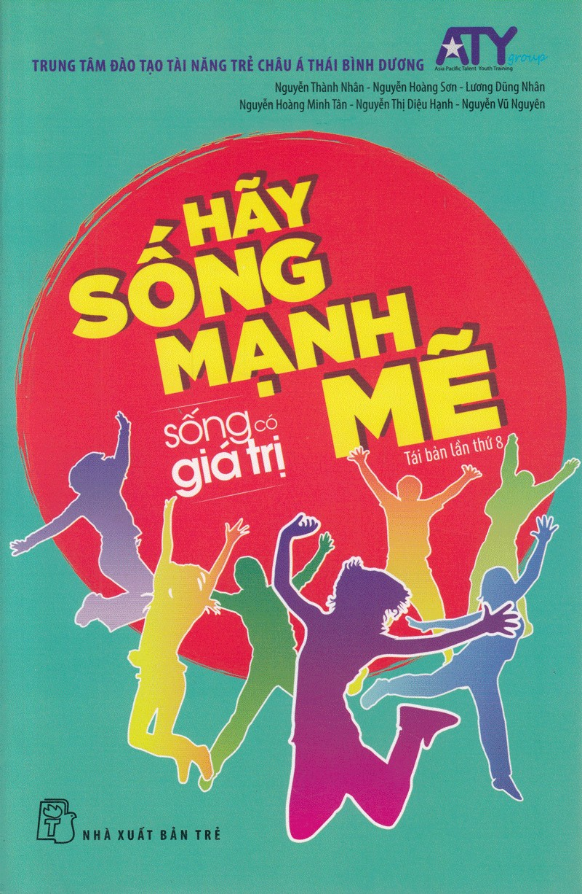

« Back
Hãy Sống Mạnh Mẽ
By Nhiều Tác Giả

SỐNG CÓ GIÁ TRỊ - Tập 1. HÃY SỐNG MẠNH MẼ
Cách Đọc Bộ Sách SỐNG CÓ GIÁ TRỊ
Ngày Thứ Nhất. BẠN ĐÃ SẴN SÀNG CHƯA?
Ngày Thứ Hai – Tự Trải Nghiệm. NGÀY CỦA NHỮNG THÓI QUEN
Ngày Thứ Ba. HÃY BẮT ĐẦU BẰNG HÀNH ĐỘNG NHỎ NHẤT
Ngày Thứ Tư – Tự Trải Nghiệm. NGÀY CỦA LỜI HỨA VÀ NỖ LỰC
Ngày Thứ Năm. CHẠY, VÀ … VẤP NGÃ
Ngày Thứ Sáu – Tự Trải Nghiệm. NGÀY ĐỂ CHẠY
Ngày Thứ Bảy. HÃY ĐỨNG TRÊN ĐÔI VAI CỦA NHỮNG NGƯỜI KHỔNG LỒ
Ngày Thứ Tám – Tự Trải Nghiệm. NGÀY TÔI TẬP “ĐỨNG” VÀ LỚN LÊN
Ngày Thứ Chín. THƯƠNG BỐ HAY THƯƠNG MẸ?
Ngày Thứ Mười – Tự Trải Nghiệm. NGÀY CỦA BỐ VÀ MẸ
TỔNG KẾT TẬP 1